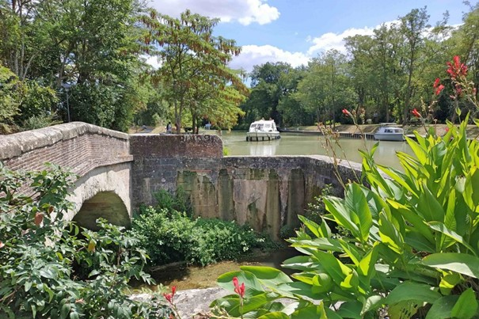

Montesquieu-Lauragais
Autrefois appelé Montesquieu-sur-Canal, Montesquieu-Lauragais s’est développé sur une colline, autour d’un château féodal. Grâce à sa situation géographique, le village est devenu un lieu de passage incontournable, qui a connu tous les temps forts de l’Histoire du Lauragais, de la tragédie cathare au Moyen Âge à la fabuleuse construction du canal du Midi, en traversant les âges d’or du blé et du pastel.
Histoire
Retour aux origines
A une époque lointaine, une grande forêt recouvrait le Lauragais. Non loin de la voie dʼAquitaine reliant Toulouse à la mer Méditerranée, un château fort fut édifié vers lʼan 1000 sur un promontoire. Petit à petit, des maisons furent construites autour. L’agglomération, appelée “castrum” prendra le nom de Montesquieu, signifiant “le mont sauvage”.
Bernard de Montesquieu est le premier seigneur à être cité dans les textes historiques en 1140. Cependant, dès l’origine, plusieurs co-seigneurs se partagent le pouvoir et ce, jusqu’à la Révolution Française. Au XIIIème siècle, Montesquieu devient un grand centre du catharisme en Lauragais. Une dizaine de maisons cathares existent ainsi qu’un des cinq cimetières cathares du Lauragais.
Une terrible destruction
Lʼautre période marquante du village est le XVIème siècle et ses guerres de religion. En ces temps-là, tous les seigneurs de Montesquieu se convertissent au protestantisme. Ils vivent de pillages et rançonnent tous les marchands circulant sur la voie dʼAquitaine. Le Parlement de Toulouse, souhaitant mettre un terme à ces brigandages, fait intervenir les troupes catholiques du duc de Joyeuse. Cʼest ainsi que 4000 hommes assiègent Montesquieu pendant 10 jours du 23 juin au 3 juillet 1586. La ville est détruite au canon : les fossés sont comblés, les maisons, les remparts et l’église brûlés. Malgré une interdiction de reconstruire la ville, des soldats bâtissent un fort 10 ans plus tard pour servir de retraite à ses habitants.
La reconstruction
Le bourg se relève rapidement de ses cendres et la reconstruction de l’église s’effectue à partir de 1600.
Le blason
De gueules à l’arbre d’argent posé sur une terrasse de sinople accompagné à dextre d’un loup contrepassant d’or, et à senestre d’un mouton d’argent.
L’âge d’or du canal du midi
A la fin du XVIIème siècle, le canal du Midi ouvre une nouvelle ère de prospérité avec lʼécluse de Négra, construite en contrebas du village. Elle sert alors de halte pour les passagers de la barque de Poste. Cette dernière faisait le trajet de Toulouse à Agde en 4 jours. Négra était la première halte pour les voyageurs avec une auberge pour prendre le repas du midi (la dînée) avant de continuer la navigation vers Castelnaudary.
Cette auberge était tenue au XVIIIème siècle par Jacques Duglas dont la belle demeure est toujours visible rue des Plumassières près de lʼéglise Saint-Jacques. Lʼécluse de Négra abrite une chapelle bâtie par le fils de Pierre-Paul Riquet. Elle est encore consacrée, au même titre que celle du Somail.


Les monuments principaux
La mairie
La nef de l’église Saint-Jacques
La rue principale
La rue de l’Ancien Petit Fossé
Dépendances du château
Le ponceau du chemin de ronde